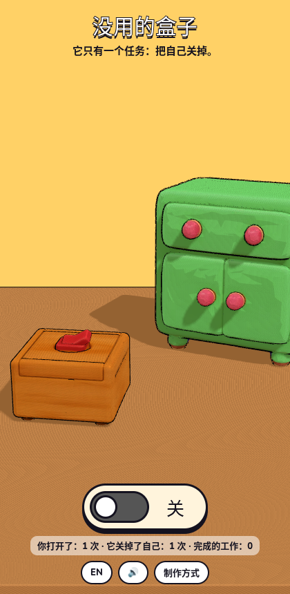
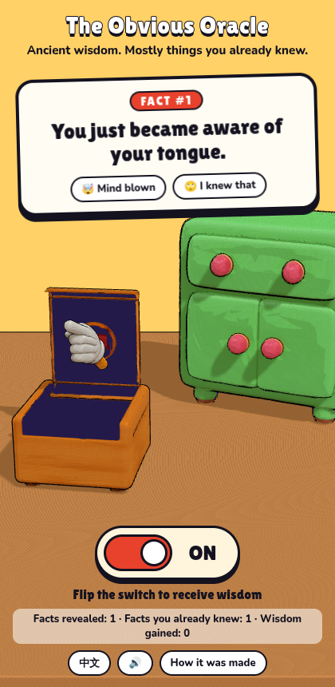
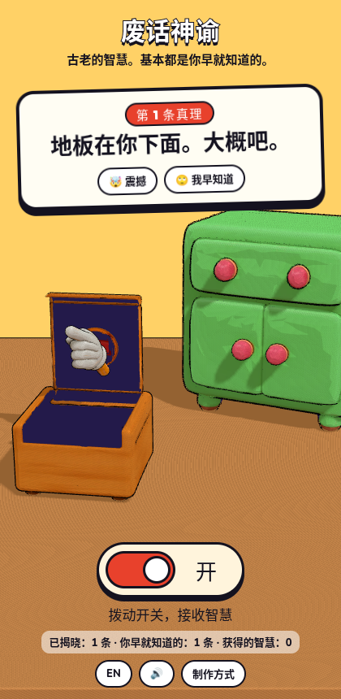

A wooden oracle that reveals extremely obvious facts, then turns itself off. Every moving part was generated and articulated by Aholo Lux3D.
Play: https://the-obvious-oracle.vercel.app · Source: https://github.com/emmaGH1/rummage/tree/main/useless



It starts from a classic useless machine: flip the switch on, a hand comes out of the lid and flips it off. We gave it a job, and the job is useless. Flip the switch to receive wisdom: a drumroll, the lid creaks open, the glove rises, and the oracle reveals FACT #n, picked from 50 hand-written facts that are all completely true and completely obvious: "Water is wet." "Every 60 seconds in Africa, a minute passes." "You are now breathing manually." Then the glove smugly flips the switch off and the lid shuts. You can react with 🤯 Mind blown (the oracle answers "no it wasn't.") or 🙄 I knew that ("everyone knew that."). The counter tracks facts revealed, facts you already knew (always the same number) and wisdom gained (always 0). The cabinet next to it agrees with the facts now and then by flinging its doors and drawer open; inside the cabinet is the inside of the cabinet. In Chinese the oracle speaks 废话文学, the internet genre of saying obvious things with full confidence.
| Piece | Lux3D call | Prompt | Task id | Time |
|---|---|---|---|---|
| Box | text-to-3D (G1-Turbo, cartoon) | cartoon wooden useless box toy, a small rectangular wooden box with a flat hinged lid on top and one big red toggle switch sticking up from the top front… | 8412876 | 135 s |
| Box | articulation | The top lid swings upward and backward on a hinge along its back edge, opening about 100 degrees | 8413206 | 135 s |
| Cabinet | text-to-3D | cartoon small cabinet with two front doors and one drawer underneath, chunky simple shapes, flat mint green paint with round pink knobs… | 8412870 | 108 s |
| Cabinet | articulation | The two front doors swing outward on vertical hinges at their outer edges, about 110 degrees, and the bottom drawer slides straight out forward about 60 percent of its depth | 8413151 | 181 s |
| Glove hand | text-to-3D | cartoon white glove hand with the index finger pointing forward, like a toy robot hand on a short stick… | 8412874 | 95 s |
The surprise: we only asked for the lid to move, but Lux3D's articulation also found the toggle switch and gave it its own revolute joint (switch_joint, ±30°), mounted on the lid. So the switch flips on a Lux3D joint too, and because it sits on the lid, the glove has to chase it as the lid opens. We kept that: it's funnier.
Result: 2 articulated pieces with 5 joints straight from Lux3D's URDF (lid, switch, two doors, drawer), none rigged by hand. Loaded in the browser with three.js and urdf-loader.
The glove's path and aim, the 50 facts and the oracle's replies, the synthesized sounds, the desk and lighting, toon shading with ink outlines, and web compression of the meshes (gltf-transform). The loading, shading and joint code is shared with our main entry, Rummage. English and Simplified Chinese, following the browser language.
Aholo Lux3D (text-to-3D, articulation), three.js, urdf-loader, gltf-transform, Vite, Vercel. Claude and Codex as coding assistants. Built in about two hours on Nov 19 2026.
Static site with pre-generated assets: no API key in the browser, keeps working past Dec 31 2026. All Lux3D calls are logged in docs/generation-log.md (rows starting with u-).